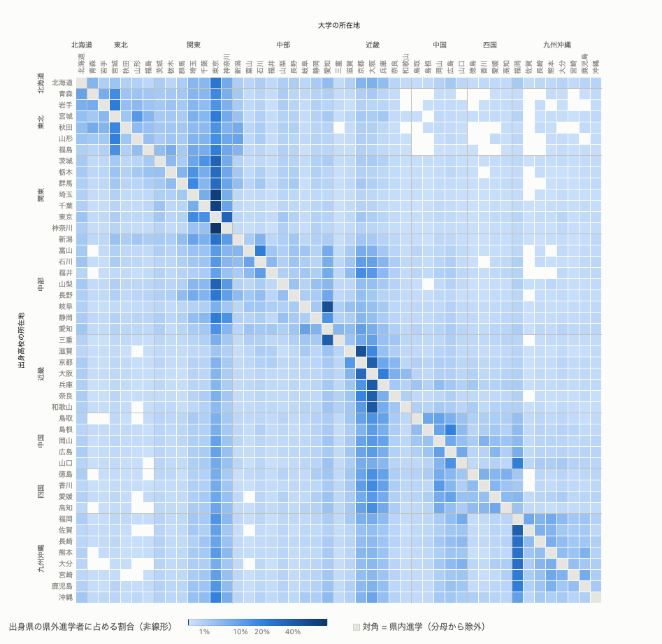
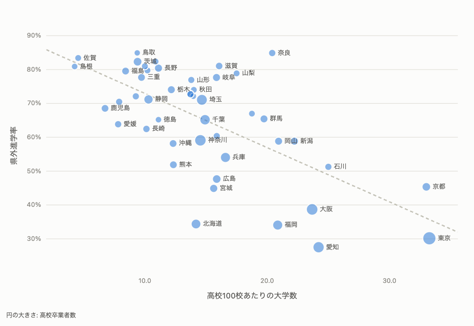

学生募集業務へのデータ活用（生成AI、グラフデータベース）
2015年度から2025年度までの文部科学省「学校基本調査」の「出身高校の所在地県別 入学者数」を、出身高校の所在地 → 入学した大学（学部）の所在地という方向の進学移動として集計した。
本報告で扱うのは入学者数であり、住民票上の移動ではない。大学の所在地は本部所在地ではなく、入学した学部の所在地である。高等学校を経ずに入学した者（外国の12年課程修了者、専修学校高等課程修了者、高等学校卒業程度認定試験合格者など）を指す「その他」（年間1.5万〜2.2万人）は都道府県に対応付けられないため、集計から除外した。
| 年度 | 入学者（47都道府県内） | うち県外進学者 | 県外進学率 | 東京都の純流入 | 1都3県の純流入 |
|---|---|---|---|---|---|
| 2015 | 602,476 | 339,771 | 56.4% | +67,861 | +64,671 |
| 2020 | 615,050 | 343,736 | 55.9% | +68,182 | +60,560 |
| 2025 | 623,307 | 340,256 | 54.6% | +74,737 | +60,588 |
都道府県ごとの偏りを、47×47のヒートマップで確認する（図1）。縦軸は出身高校の所在地、横軸は進学先の大学の所在地である。

図1では、東京都の列が多くの都道府県で濃く表示されている。県外へ進学した高校出身者のうち、東京都の大学へ進学する割合が高いことを示す。東京都以外では、対角線の周辺、すなわち隣接する都道府県間の移動にも濃い部分がみられる。
図1と同じ行列を、年度と都道府県を選びながら操作できる形で公開している。同じ画面からフロー図と設置数へも切り替えられる。
https://tamaden55.github.io/university-migration-analysis/
| 受け入れ超過（上位5） | 純流入 |
|---|---|
| 東京都 | +74,737 |
| 京都府 | +18,817 |
| 大阪府 | +10,979 |
| 愛知県 | +3,838 |
| 福岡県 | +3,210 |
| 送り出し超過（下位5） | 純流入 |
|---|---|
| 茨城県 | −10,541 |
| 埼玉県 | −9,398 |
| 静岡県 | −9,108 |
| 長野県 | −5,570 |
| 岐阜県 | −5,163 |
単位: 人。ほかに宮城県・石川県・神奈川県が受け入れ超過。
行き先の散らばり方は出身都道府県によって大きく異なる。神奈川県の高校出身者は、県外へ進学した者の85%が東京都へ向かう。埼玉県は75%、千葉県は71%、滋賀県は京都府へ59%、岐阜県は愛知県へ60%と、いずれも1か所に集中する。一方、広島県は最も多い進学先の大阪府でも13%で、岡山県15%、石川県15%と、行き先が全国に分散する。表2で同じ送り出し超過に分類される都道府県でも、進学先が特定の1か所に定まっている場合と、定まっていない場合がある。
| 出身都道府県 | 最も多い進学先 | 割合 |
|---|---|---|
| 神奈川県 | 東京都 | 85% |
| 埼玉県 | 東京都 | 75% |
| 岐阜県 | 愛知県 | 60% |
| 出身都道府県 | 最も多い進学先 | 割合 |
|---|---|---|
| 石川県 | 東京都 | 15% |
| 岡山県 | 大阪府 | 15% |
| 広島県 | 大阪府 | 13% |
| 都県 | 2015 | 2020 | 2025 |
|---|---|---|---|
| 東京都 | +67,861 | +68,182 | +74,737 |
| 神奈川県 | +4,411 | +1,465 | +361 |
| 千葉県 | −4,193 | −3,138 | −5,112 |
| 埼玉県 | −3,408 | −5,949 | −9,398 |
| 3県 計 | −3,190 | −7,622 | −14,149 |
| 1都3県 計 | +64,671 | +60,560 | +60,588 |
1都3県全体の純流入は、東京都の受け入れ超過によって成り立っている。一つの地域として集計すると、東京都の増加とほかの3県の減少が混ざり、どちらの動きも見えなくなる。学生募集の分析では、東京都をほかの3県と分けて扱う必要がある。
県内に大学進学の選択肢が多くあれば県外進学を防げる、という議論がある。果たして事実であろうか。図2は、各都道府県の県外進学率と「高校100校当たりの大学数」の関係をみたものである。

回帰直線から離れた奈良県は、高校100校当たり大学20.4校で全国3位の水準にありながら、県外進学率は85%である。ほぼ同じ20.9校の福岡県は34%で、51ポイントの差がある。岐阜県と宮城県も密度は15.9校と15.6校でほぼ同じだが、県外進学率は78%と45%である。大学数の密度が近い都道府県の間でも、県外進学率は30ポイント以上開く。
大学数の密度が同程度でも県外進学率が高い都道府県では、県外進学者の行き先が近隣の大都市圏に集中している傾向が見られる。奈良県は県外へ進学した者の46%が大阪府へ、岐阜県は60%が愛知県（名古屋市）へ向かう。一方、福岡県と宮城県の最も多い進学先はいずれも東京都で、それぞれ16%と28%にとどまる。両県には福岡市・仙台市があり、周辺地域からの進学を受け入れる側にある。福岡県への県外からの流入11,178人のうち67%が九州・沖縄から、宮城県への流入6,044人のうち61%が東北からで、いずれも純流入は正である。
| 都道府県 | 高校100校当たり大学数 | 県外進学率 | 最も多い進学先 | 集中度 |
|---|---|---|---|---|
| 奈良県 | 20.4 | 85% | 大阪府 | 46% |
| 福岡県 | 20.9 | 34% | 東京都 | 16% |
| 岐阜県 | 15.9 | 78% | 愛知県（名古屋市） | 60% |
| 宮城県 | 15.6 | 45% | 東京都 | 28% |
ただし、これは行き先の分布を記述したものであり、距離や進学先の規模を変数として用いた分析ではない。近隣の中核都市への流出が県外進学率を高めているとまでは、このデータからは言えない。
以上は2025年度の横断面を対象に、n=47で算出した相関であり、因果関係の方向は特定できない。大学数の密度と県外進学率の関係には、大学の学部構成、近隣県への距離、進学先の選好など、ここで扱っていない要因が含まれ得る。これらを検討するには、移動人数を距離や所得などで説明する重力モデルが必要である（11節）。また、扱っているのは進学時点の移動であり、卒業後の就職先は対象としていない。
公開データの取得から可視化までの処理に生成AIを活用した。手作業をできる限り介さない一連の処理として構成し、同一の入力データに対して同じコマンドを実行すれば、同じ成果物を再生成できる。第1部の図1・図2は、この経路で作った可視化ページから書き出したものである。
11年分の表は、年度により形式が異なる（表6）。セル位置を固定して読み取ると、形式の変わった年度で参照先がずれる。このため、県名の一致によりヘッダ行と行見出し列を年度ごとに検出する方式を採用した。高校卒業者の進路の表も同様で、2019年度以前と2020年度以降で就職者の内訳の区分が変わるため、見出しの文字列から位置を探している。
| 年度 | 「1 計」の表 | 列見出し（出身高校の所在地） | 行見出し（大学の所在地） |
|---|---|---|---|
| 2015〜2020 | 2枚に分割 | 青 森 | 青 森 |
| 2021 | 1枚 | 青森県 | 青森 |
| 2022〜2025 | 1枚 | 青森県 | 青森県 |
「青 森」は全角スペースを含み、都府県の接尾辞が付かない。
読み取り後は、大学所在地ごとに 47都道府県の合計 + その他 = 表の「計」列 となることを検証し、1件でも一致しなければ変換を中断する。設置者別の表には公立の区分がないため、計 − 国立 − 私立 により算出し、負値が生じないことを確認している。学校数も、国立・公立・私立の合計が計と一致することを都道府県ごとに検証している。これにより、異常を検出しないまま処理が進行することを防ぐ。
OD表は行列形式であるが、ノードとエッジで表現することで、都道府県間のつながりをたどる問いを記述できる。グラフの形は次のとおりである。
(:Prefecture {name})-[:ENTERED_UNIVERSITY_IN {year, movers}]->(:Prefecture)
年度をノードではなく関係のプロパティとして保持すれば、同じスキーマのまま11年分を1つのグラフに収められる。第1部で用いた指標も、この構造の上で表現できる。純流入は、その都道府県へ入る辺の重みの合計から、出る辺の重みの合計を引いた値にあたる。Cypherでは次のように書ける。
MATCH (p:Prefecture)
OPTIONAL MATCH ()-[incoming:ENTERED_UNIVERSITY_IN {year: 2025}]->(p)
WITH p, sum(incoming.movers) AS inbound
OPTIONAL MATCH (p)-[outgoing:ENTERED_UNIVERSITY_IN {year: 2025}]->()
RETURN p.name AS prefecture, inbound, sum(outgoing.movers) AS outbound,
inbound - sum(outgoing.movers) AS net_inflow
ORDER BY net_inflow DESC;
表3・表5の集中度は、出る辺のうち最も重い1本が、出る辺の重みの合計に占める割合にあたる。ただし、単純な次数中心性は大学定員の規模を再記述するだけになりやすいため、まず人数・構成比・純流入を分けて確認し、PageRankやコミュニティ検出は用いていない。
ただし、読み込みと問い合わせのCypherは書いたものの、Neo4jを立てて実行してはいない。第1部に載せた数値はいずれもCSVから算出したものである。
実装にはClaude Code（対話型のコーディング支援）を用いた。
可視化ページでは、説明を足すのではなく、読み取れない操作を外す方針をとった。自動再生・表示のしきい値・ノードの大きさの切り替えは、押した結果として図の何が変わるのかが読み取れず、説明文を添えても伝わらなかったため外した。凡例・軸・ボタンから読み取れることは文で書き直さない、という基準である。
可視化3ページを、外部ライブラリもビルド工程もなしにfile://から開ける形にし、表示条件をURLに残したのは、業務で画面をそのまま同僚へ渡せるようにするためである。